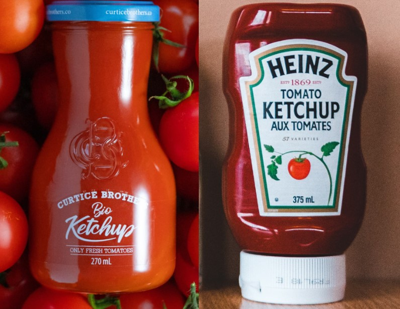
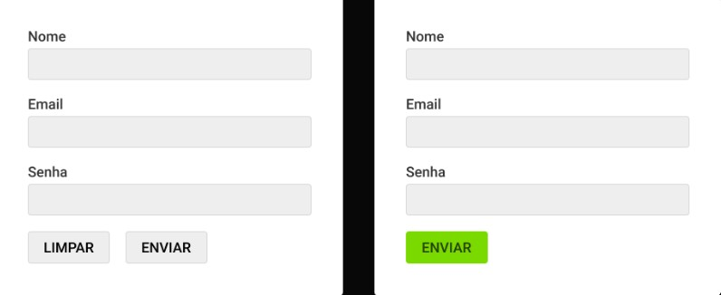

Início.
UX Design
é pensar no usuário.
UX = User Experience = Experiência do Usuário
- Design que envolve os usuários impactados pelo projeto.
Heurísticas e Pesquisa
- Boas práticas / entender as necessidades e comportamento.
UX e UI
Ambos possuem UX e UI, o contexto de uso/usuário define o ideal.

Usuário
O comportamento do usuário deve guiar as nossas escolhas.

complica a vida do usuáario | simplifica a vida do usuário
Heurísticas
Boas práticas definidas através de pesquisas e observações.
Facilite o escaneamento das informações
- Os usuários geralmente escaneiam o conteúdo através de links, títulos e listas.
Opções visíveis são mais acessadas
- Mantenha visível os links para as principais partes do site.
https://www.nngroup.com/articles/hamburger-menus/
Heurísticas Aplicada
https://stripe.com/pt-br-ie
Pesquisa
UX Design é 80% pesquisa com os usuários impactados pelo projeto.
Empatia
- Pesquisa com usuários, concorrentes, especialistas e estudos.
Definir
- Definir os problemas que serão o foco do projeto.
Idealizar
- Definir ideias que podem solucionar o problema.
Prototipar
- Materializar soluções a partir das ideias definidas.
Testar
- estar a solução com o usuário final e identificar melhorias.
Processo de Design Thinking d.school - Stanford
Mais: https://www.youtube.com/watch?v=ZXapXz6iPKs